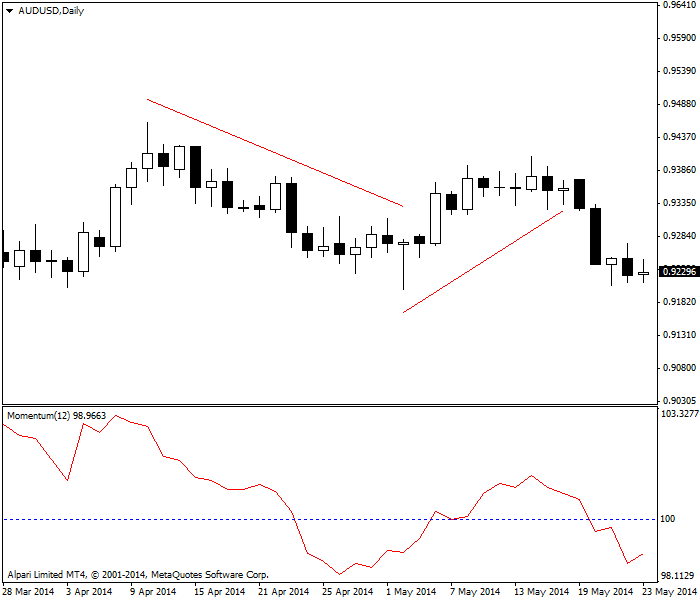
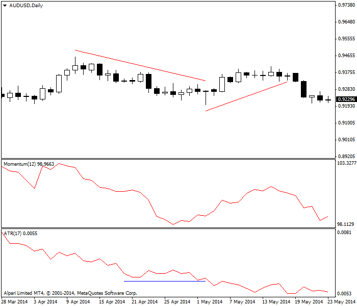
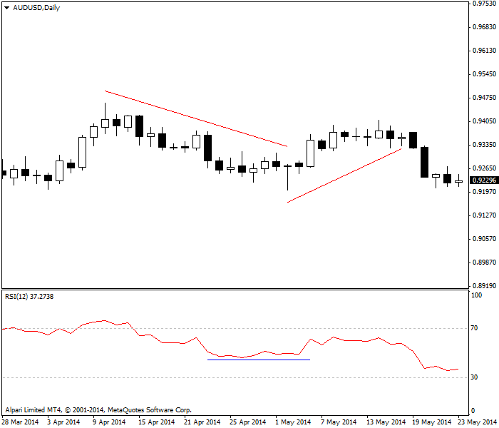
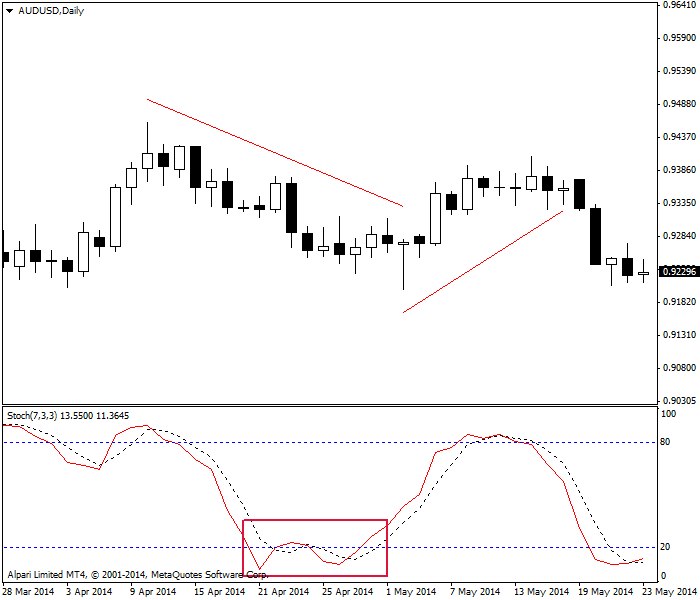
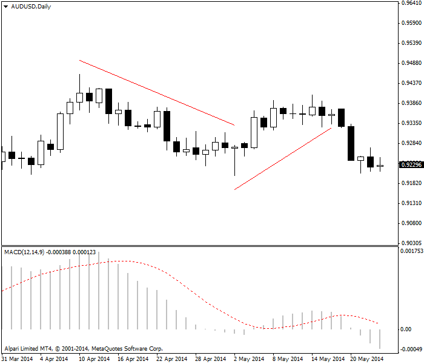
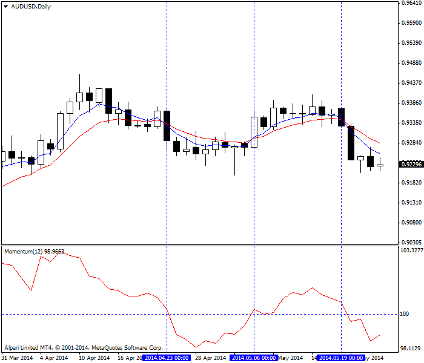
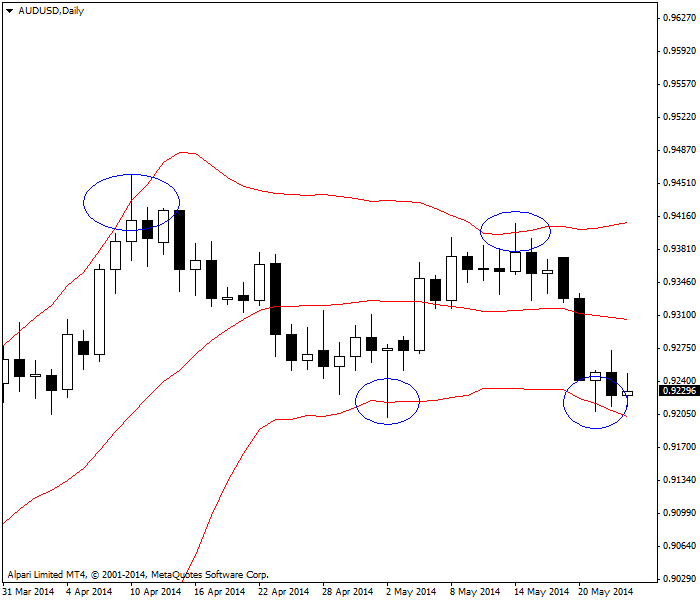

<!DOCTYPE html>
<html>
</html>
<head>
  <meta charset="utf-8">
  <meta http-equiv="X-UA-Compatible" content="IE=edge">
  <title>外汇站（fx-z.com） - 领先指标与滞后指标</title>
  <meta name="description" content="">
  <meta name="viewport" content="width=device-width, initial-scale=1">
  <meta name="robots" content="all,follow">
  <!-- Bootstrap CSS-->
  <link rel="stylesheet" href="vendor/bootstrap/css/bootstrap.min.css">
  <!-- Font Awesome CSS-->
  <link rel="stylesheet" href="vendor/font-awesome/css/font-awesome.min.css">
  <!-- Google fonts - Roboto-->
  <link rel="stylesheet" href="https://fonts.googleapis.com/css?family=Roboto:400,300,700,400italic">
  <!-- owl carousel-->
  <link rel="stylesheet" href="vendor/owl.carousel/assets/owl.carousel.css">
  <link rel="stylesheet" href="vendor/owl.carousel/assets/owl.theme.default.css">
  <!-- theme stylesheet-->
  <link rel="stylesheet" href="css/style.default.css" id="theme-stylesheet">
  <!-- Custom stylesheet - for your changes-->
  <link rel="stylesheet" href="css/custom.css">
  <!-- Favicon-->
  <link rel="shortcut icon" href="img/favicon.png">
  <!-- Tweaks for older IEs--><!--[if lt IE 9]>
    <script src="https://oss.maxcdn.com/html5shiv/3.7.3/html5shiv.min.js"></script>
    <script src="https://oss.maxcdn.com/respond/1.4.2/respond.min.js"></script><![endif]-->
</head>
<body>
  <div id="all">
    <div class="container-fluid">
      <div class="row row-offcanvas row-offcanvas-left"> 
        <!--   *** SIDEBAR ***-->
        <div id="sidebar" class="col-md-4 col-lg-3 sidebar-offcanvas">
          <div class="sidebar-content">
            <h1 class="sidebar-heading"> <a href="https://fx-z.com">fx-z.com</a></h1>
            <p class="sidebar-p">介绍外汇相关的基本知识，告诉您如何进行自己的技术面和基本面分析，讲解先进的交易理念，并且为您阐述失败交易者与专业交易者之间的真正区别。 </p>
            <p class="sidebar-p">通过这些课程的学习，您将学会如何根据自己的优势来应用情绪分析，还将了解真实世界的事件会对货币汇率产生什么影响，央行在外汇市场中所发挥的作用，以及交易者在颇受欢迎的即期外汇交易中有哪些选择方案。 </p>
            <ul class="sidebar-menu">
                <!-- Link-->
                <li class="sidebar-item"><a href="https://fx-z.com" class="sidebar-link">首页</a></li>
                <!-- Link-->
                <li class="sidebar-item"><a href="cihui.html" class="sidebar-link">外汇词汇</a></li>
                <!-- Link-->
                <li class="sidebar-item"><a href="ebook.html" class="sidebar-link">获取外汇电子书</a></li>
            </ul>
            <p class="social"><a href="https://www.cn-forextime.com/zh?partner_id=4920383" target="_blank"data-animate-hover="pulse" class="external facebook"><i class="fa fa-eur"></i></a><a href="https://www.cn-forextime.com/zh?partner_id=4920383" target="_blank" data-animate-hover="pulse" class="external gplus"><i class="fa fa-gbp"></i></a><a href="https://www.cn-forextime.com/zh?partner_id=4920383" target="_blank" data-animate-hover="pulse" class="external twitter"><i class="fa fa-rmb"></i></a><a href="https://www.cn-forextime.com/zh?partner_id=4920383" target="_blank" title="" class="external instagram"><i class="fa fa-dollar"></i></a><a href="https://www.cn-forextime.com/zh?partner_id=4920383" target="_blank" data-animate-hover="pulse" class="email"><i class="fa fa-money"></i></a></p>
            <div class="copyright text-center text-md-left">
             
              
            </div>
          </div>
        </div>
        <!--   *** SIDEBAR END ***  -->
        <!--   *** DETAIL ***-->
        <div class="col-md-8 col-lg-9 content-column white-background">
          <div class="small-navbar d-flex d-md-none">
            <button type="button" data-toggle="offcanvas" class="btn btn-outline-primary"> <i class="fa fa-align-left mr-2"></i>菜单</button>
            <h1 class="small-navbar-heading"> <a href="https://fx-z.com/8-13.html">下一篇 </a></h1>
          </div>
          <div class="row">
            <div class="col-xl-10">
              <div class="content-column-content">
                <h1>领先指标与滞后指标</h1>
     <p>
    对技术分析过于热情的新手（以及一些更有经验的老手）有时相信自己发现了领先指标。这是完全错误的。所有指标均基于过去的价格动向，因此从逻辑上讲，没有指标能够可靠地指引未来。
</p>
<p>
    指标和某些图表配置可能强烈指示下一次价格动向，尤其是当他们一起出现并提供一些确认信号时，但总会发生某些新闻并且完全毁掉被指示的价格动向。我们有时见到三个或四个“领先”指标指向同一个方向，然而它们预测的价格动向并未出现。指标仅有指示作用，却没有支配作用，而且不幸的是，我们并没有关于指标可靠性的统计数据。如果您想计算指标的可靠性系数，您需要亲自操作。要旨在于：所谓的领先指标通常是错误的。
</p>
<p>
    <strong>领先指标</strong>
</p>
<p>
    Welles Wilder 注意到，动量变化通常（但不是始终）是走向变化的前兆。典型示例为，动量最开始比较温和，当走势形成时迅速加速，当几乎所有买家或卖家已进行头寸操作时达到顶峰，然后减弱，随后行动最快的交易者获利了结，然后引发走势改变方向。
</p>
<p>
    如果您能确定动量是加速还是减速，那么您可以预测波峰、波谷以及相应的头寸。因此，顶级领先指标均建立在动量的基础之上：
</p>
<p>
    <strong>动量</strong>
</p>
<p>
    <strong>ADX</strong>
</p>
<p>
    <strong>ATR</strong>
</p>
<p>
    <strong>RSI</strong>
</p>
<p>
    <strong>随机震荡指标</strong>
</p>
<p>
    <strong>MACD</strong>
</p>
<p>
    您可以使用普通的传统动量或变化速率来判别动量阶段。下图所示的动量由今日收盘价除以 12 个时段前的收盘价而计算得出。我们发现动量跟随价格下跌，但之后停止跌势，开始上涨。我们得到了一个更低的波谷值，但这是一个蜻蜓十字星，而且我们将它解读为看涨信号。毋庸置疑，动量是一项优秀的领先指标；价格继续上行。经历一轮小幅上涨之后，动量与价格在同一天达到峰值，然后与价格同时下跌。此时，它是一项同步指标。
</p>
<p>
     动量指标先领先，再同步。
</p>
<p>
    ADX 衡量趋势的强度，进而衡量多头或空头的强度。另一项领先指标是平均真实波动范围或 ATR。而且，它也通过市场心理学进行解释。随着时段内越来越多的交易者角争夺市场走向，该波动范围将会扩大。如果多头获胜，则收盘价位于或接近高位，但相距较远的平均波动范围宽口端可以见到空头信号。如果市场在反弹或跌势结束时重新出现不确定性，由于交易者对市场走向的信心减弱，波动范围将出现一定的收缩。这正是 Wilder 在 ADX 计算中用到 ATR 的主要原因。
</p>
<p>
    下图与上图相同，但额外添加了 ATR。蓝色水平线标记 ATR 停止下跌的部分。这条线非常平稳，且略有上升，但上升幅度不大。经过平稳区域后，ATR 再次下跌，说明由动量上升所确定的小幅反弹只不过是昙花一现，而且不值得信任。真正的反弹须伴有上升的 ATR。
</p>
<p>
     ATR 减弱表示走势减弱
</p>
<p>
    相对强弱指数是另一项基于动量的领先指标。请查看下图。与 ATR 一样，我们可以见到一个表示动量停止收缩的水平区域，但经过该区域之后的上升较为疲软，而且持续时间不长。
</p>
<p>
    RSI 作为领先动量指标
</p>
<p>
    将动量作为领先指标时，随机震荡指标或许是最常被交易者用到的指标。如下图所示，随机指标给出了错误的买入信号（红框），而且该信号迅速反转，等数个时段后才出现真正的买入信号。请注意，真实买入信号出现的时间比仅使用原始动量的买入信号大约早 5 天。
</p>
<p>
     随机震荡指标作为领先指标，红框内出现错误信号
</p>
<p>
    最后，以下为外汇行业最可靠的指标 MACD。MACD 给出的卖出信号晚于震荡指标。但之后，随着价格反弹，我们仅见到最小的买入信号，而且该信号仅持续一个时段。如果您使用 MACD，或至少使此处参数的 MACD，那么您根本不会参与反弹。
</p>
<p>
     MACD 并未在此处提供任何可交易信号。
</p>
<p>
    每种动量指标都有优点和缺点，具体取决于您是哪一类交易者。快速交易者喜欢随机指标和市场错误等，因为这能让他们一直活跃于市场。如果您更加厌恶风险，而且希望见到更宏观的状况，MACD 将为您去掉此处所示的短暂或错误的上行反弹。有些分析师将 MACD 视为一种滞后指标，因为它绕过了反弹，但这是一个见仁见智的问题。
</p>
<p>
    作为基于算法的指标，棒形图、图形组合和形态与领先指标一样好（如果不是更好）。突破支撑线或阻力线往往意味着可靠的领先指标。有些图形组合（包括蜡烛图在内）具有较高的预测价值，例如纺锤线、锤形线和上吊线等。其他较为可靠的形态包括双重顶和双重底、缺口以及岛型反转。
</p>
<p>
    <strong>滞后指标</strong>
</p>
<p>
    根据定义，任何基于移动平均线的指标均为滞后指标。滞后指标的优势在于其可靠性系数。例如，当您遇到 5、10 个时段或 10、20 个时段的移动平均线交汇点时，您交易出错的概率将非常低。下图显示 5、10 个时段移动平均线交汇点，顶部窗口为 12 个时段动量。本例中，竖线标注交汇点，而且它们恰好与动量显示买入或卖出信号的日期一致。动量通常领先几个时段，但不用担心——重点是，将领先指标与滞后指标一起使用要采用确认原则。没有哪种指标永远可靠，因此确认原则是非常好的办法，尤其是如果您使用领先指标将首个小头寸推向交易，以及与滞后指标达成一致并追加头寸时。
</p>
<p>
     将移动平均线与 MACD 结合使用
</p>
<p>
    布林线基于移动平均线，因此它应该是滞后指标，但是在外汇中，它们可以领先、一致或滞后。如布林线课程所述，当价格突破指标顶部或底部时，这被视为一次突破，之后可能会出现一次相同方向的走势。外汇不是如此。我们预期外汇中出现相反的效果——突破后出现一次方向相反的走势。突破可能在逆转前持续 2 或 3 个时段（可多达 5 个时段），但几乎不会超过这些时段。
</p>
<p>
    最后一张图表显示相同周期上的相同货币对，布林线突破用蓝圈标记。请注意，在每个转折点，蜡烛线较长的上影线或下影线与 B 线突破的重合处正是一种确认形式。
</p>
<p>
     布林线突破释放逆转信号。
</p>
<p>
    总而言之，只要您认可动量往往领先、移动平均线总是滞后，那么领先指标与滞后指标之间的区别并不是特别有用。您永远无法让移动平均线成为领先指标，但所谓的领先指标将产生一定数量的虚假（错误）信号。
</p>
<p>
    <br/>
</p>
<p>
    <br/>
</p>
              </div>
            </div>
          </div>
        </div>
      </div>
    </div>
  </div>
  <!-- JavaScript files-->
  <script src="vendor/jquery/jquery.min.js"></script>
  <script src="vendor/popper.js/umd/popper.min.js"> </script>
  <script src="vendor/bootstrap/js/bootstrap.min.js"></script>
  <script src="vendor/jquery.cookie/jquery.cookie.js"> </script>
  <script src="vendor/owl.carousel/owl.carousel.min.js"></script>
  <script src="vendor/masonry-layout/masonry.pkgd.min.js"></script>
  <script src="js/front.js"></script>
</body>